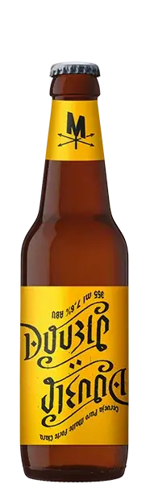
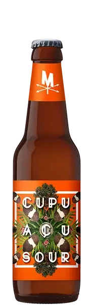
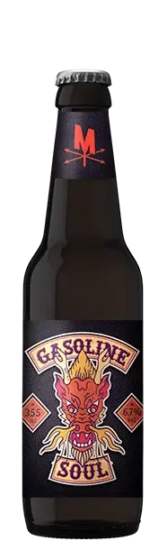

New England Ipa
La New England IPA es un tipo de cerveza India Pale Ale muy lupulada pero poco amarga que destaca por ser muy turbia, afrutada y sedosa, y que está causando furor entre los amantes del craft beer.
Sauving Belgian Blond
La Belgian Blond es un estilo difícil de definir, pero aquí Josh Weikert te muestra cómo crear uno que sea maravillosamente fresco y limpio y que use la especia, los ésteres y el carácter "belga" como un acento, no como un título
Brown Ale
La cerveza Brown Ale son un estilo tradicional inglés, elaborado históricamente en la zona norte de Inglaterra. Aunque su demanda había caído en los últimos tiempos el consumo de este tipo de cervezas ha dado una subida gracias a las elaboraciones artesanas. Fuertes y amargas las Brown Ales tiene notas de nueces y chocolate con un final a lúpulo.